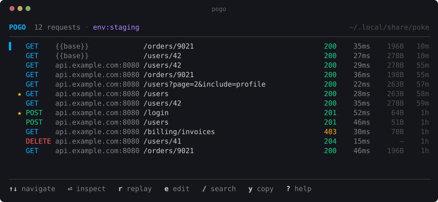
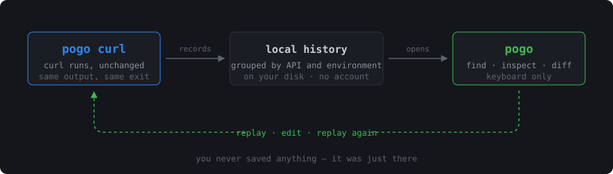
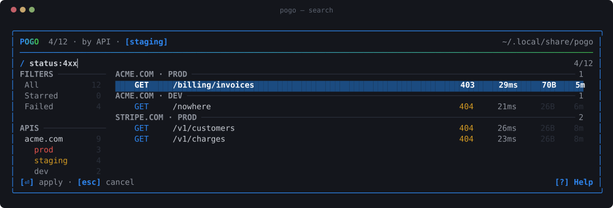
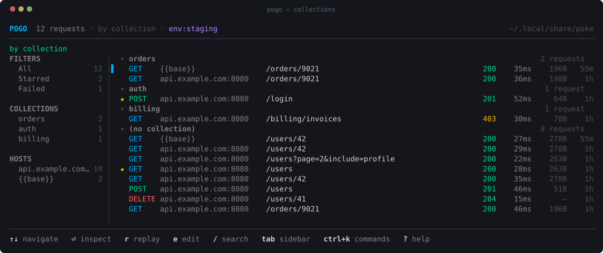
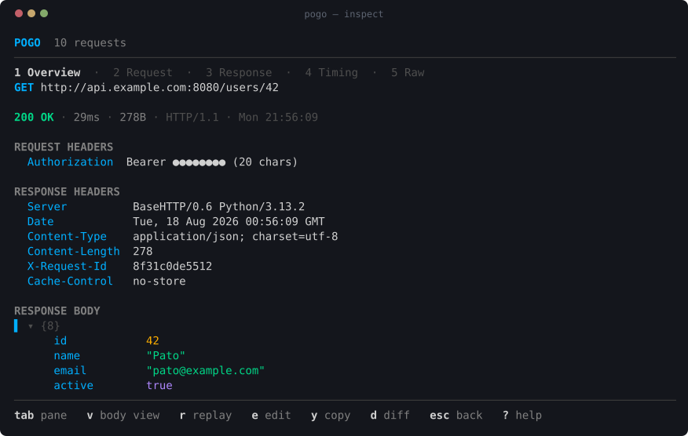
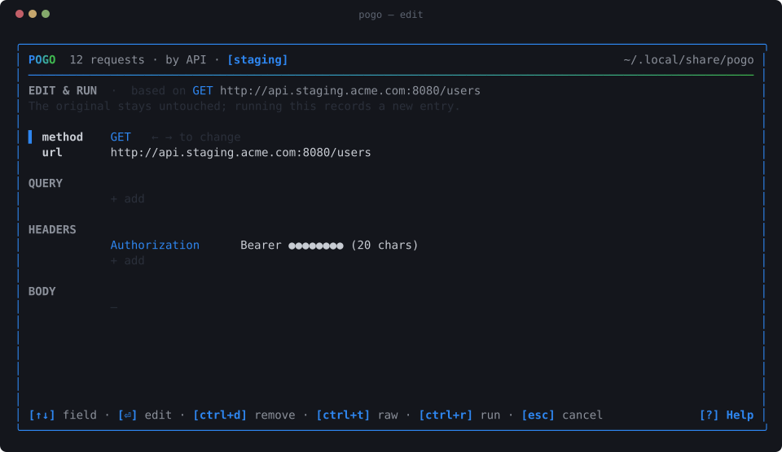
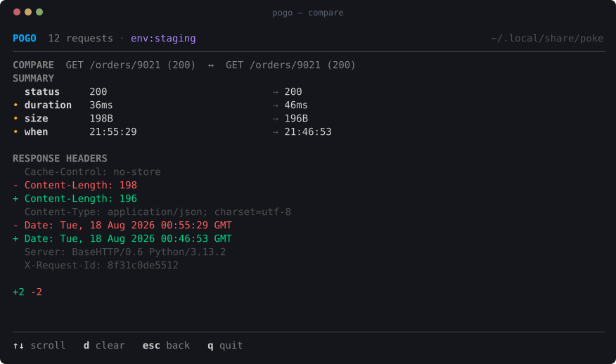
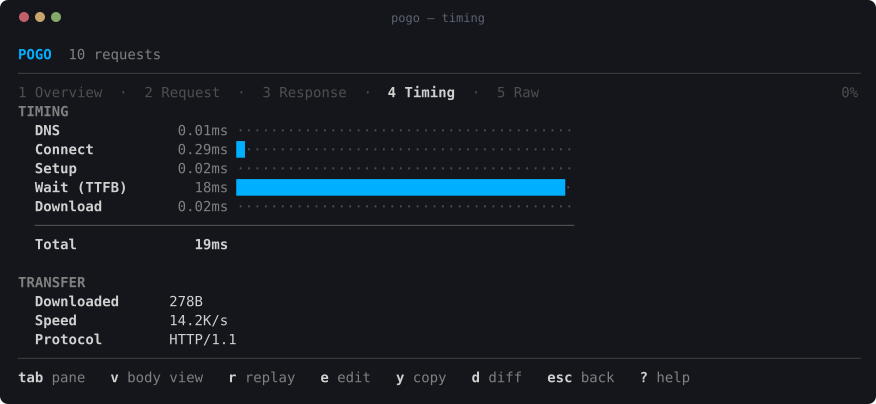
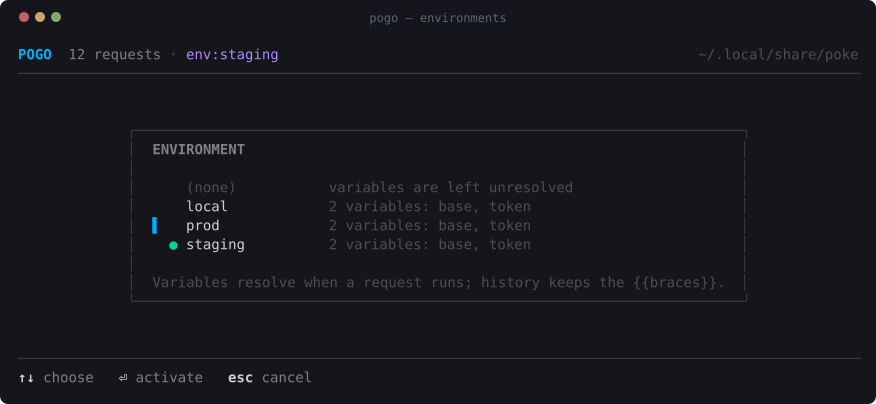
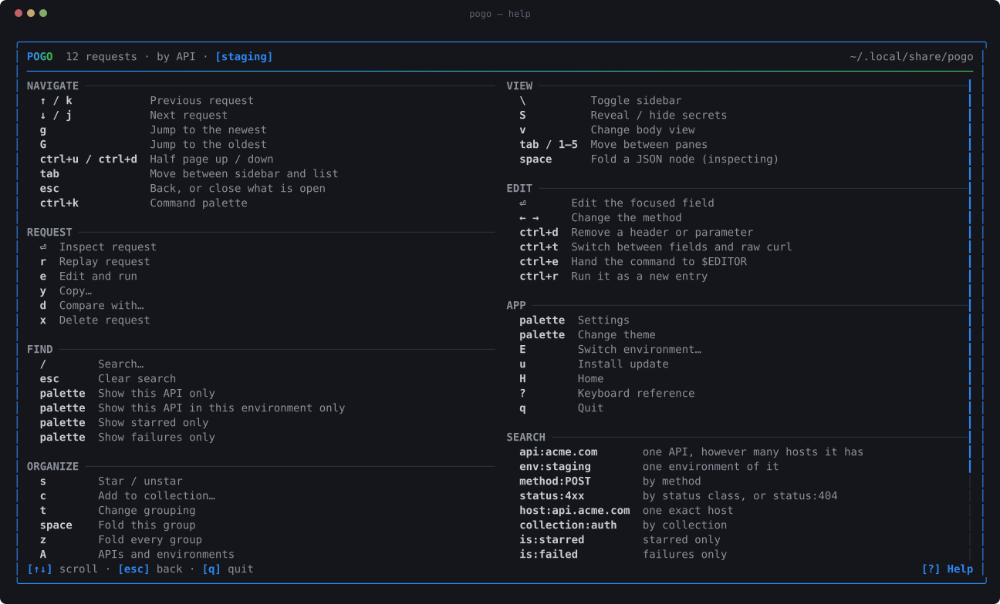

$ poke + pogo
Poke your APIs. Pogo through your requests.
poke runs curl and remembers what it ran.
pogo is a terminal UI to find, inspect, replay, edit and diff
those requests.
Your shell remembers the command. It does not remember the response,
the status, how long it took, or which of the six nearly identical
curl lines in your history was the one that worked.
Type poke where you would have typed curl:
$ poke https://api.example.com/users/42 { "id": 42, "name": "Pato", "active": true }
Same output, same flags, same exit code — your arguments go to the real curl binary. It just also writes down what happened. Later:
$ pogo

You never saved anything. You never named a collection. It was just there.
Quickstart
# 1. install — needs curl, which you already have $ curl -fsSL https://raw.githubusercontent.com/rmpato/poke/main/install.sh | sh # 2. make a request, exactly as curl would $ poke https://api.github.com/zen # 3. open everything you have run $ pogo
Then ↑↓ to move, ⏎ to inspect, r to replay, e to edit and run, / to search, d to diff two responses, ? for everything else.
That is the whole product. Everything below is detail.
The loop

Other ways to install
$ go install github.com/rmpato/poke/cmd/poke@latest $ go install github.com/rmpato/poke/cmd/pogo@latest
$ git clone https://github.com/rmpato/poke && cd poke && make install
macOS and Linux. curl is the only runtime dependency, and it is
already on your machine. Update later with poke --update.
Two tools, one job
poke
curl, with a memory.
A wrapper, not a reimplementation. Every flag works, piping works,
-o works, -v works, exit codes match.
Capture rides on side channels that leave curl alone: -D for
response headers, a tee for the body, --write-out for
timings. The two behaviors curl changes when its output is a pipe are
deliberately restored, so wrapping is invisible.
pogo
the last hundred requests, made useful.
History, search, inspection, replay, structured editing, JSON-aware diffing, collections, environments, copy-as-curl.
Everything is a keystroke, the footer always shows what applies, and ? lists the rest.
Find it

History gets noisy, so t cycles grouping — chronological, by host, by collection — s stars what matters and c files a request under a name.

Read it

Request and response, headers, query parameters, bodies — with a JSON tree you can fold, and raw bytes when you need them.
Change it and run it
e opens the request as fields. ctrl+r runs it as a new entry; the original is never touched.

Edits are applied to your original command rather than used to regenerate
one, so a request carrying --cacert, --resolve or
-k keeps every one of those options when you change a header.
ctrl+t shows the exact command it will run.
See what changed

JSON-aware: reordered keys and reformatted whitespace are not differences, changed values are. Response headers are diffed too — a changed content type is often the whole answer.
See where the time went

Straight from curl's own instrumentation. Nothing is estimated: if your curl is too old to report timings, pogo says so instead of inventing numbers.
Keep secrets out of your history
Write the request with variables. It runs against real values; your history stores the braces.
$ poke -H "Authorization: Bearer {{token}}" '{{base}}/users/42'
curl gets the token. history.jsonl gets {{token}}.
A replay months later resolves it again — against whatever the variable holds
then, not the expired value you captured.

E switches environment. Replay the same request against staging and production, then press d to see exactly how they differ. Environments and variables.
Bring in what the browser did
Devtools → Network → Save all as HAR, then:
$ pogo --import-har ~/Downloads/api.example.com.har imported 34 requests into collection "api.example.com"
Every request arrives with its headers and body, as a curl command you can inspect, edit and replay. The short path from "it works in the browser but not from my terminal" to a diff of the two.
Why not just shell history?
$ history | grep curl
finds the command you typed. It does not tell you:
| shell history | pogo | |
|---|---|---|
| the command | yes | yes |
| what came back | no | yes |
| status code | no | yes |
| how long it took | no | yes |
| where the time went | no | yes |
| search by status, host or collection | no | yes |
| replay | retype it | r |
| edit and replay | retype it | e |
| compare two responses | no | d |
pogo is HTTP-aware history for your terminal. That is all it is trying to be.
Storage & security
History lives in ~/.local/share/poke as append-only JSONL plus
payload files. Directory 0700, files 0600. Nothing
encrypted, no account, no cloud, no telemetry — your requests never leave the
machine.
Request headers routinely carry credentials, and by default poke stores them as sent. Your history file will contain bearer tokens, cookies and API keys in plain text. That is a trade-off, not an accident: stripping them would make replay silently fail to authenticate. pogo masks secrets on screen, but the file on disk holds the real thing.
Three ways to change that, in increasing order of strength:
POKE_REDACT=store poke ... # strip secrets before writing poke --poke-no-capture ... # do not record this one at all poke -H "Authorization: Bearer {{token}}" ... # never capture it in the first place
Per-host rules let production and localhost have different answers. Read the security notes before pointing this at production credentials — they are short and they do not hedge.
The one thing poke does over the network by itself: it asks GitHub once a day
whether a newer release exists, only from an interactive terminal, and only
ever prints a line saying so. Installing needs poke --update or a
confirmation in pogo. POKE_NO_UPDATE_CHECK=1 switches it off.
Keyboard

How it works
poke <curl args> ──▶ curlargs ──▶ runner ──▶ the real curl
(metadata) (execute + capture)
│
capture ──▶ store (JSONL + blobs, local)
▲ │
│ ▼
pogo replays ─┘ tui
Both binaries share one execution path, so a replay is the same code running the same argv. Storage knows nothing about the UI, the UI never touches the filesystem, and the curl layer is testable without a network.
Go, Bubble Tea, Lip Gloss, Bubbles. No database, no cgo, no daemon. Full architecture notes — including the two curl behaviors poke has to restore, and why. Runbooks cover releasing, screenshots and triage.
Documentation
Keybindings
Every key, and the search syntax.
Environments & variables
Variables, environments, collections, HAR import.
Storage & security
What lands on disk, what it exposes, how to change it.
Architecture
How poke wraps curl without changing it.
Runbooks
Releasing, screenshots, triage, history recovery.
Contributing
Building, testing, and the two rules that are not negotiable.